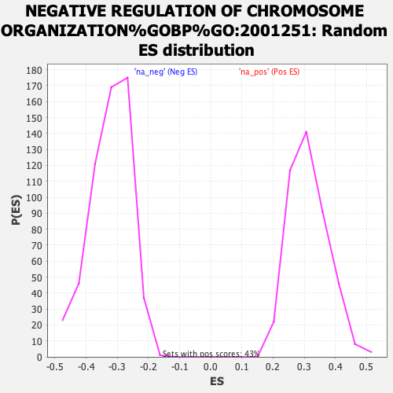

Profile of the Running ES Score & Positions of GeneSet Members on the Rank Ordered List
| Dataset | ranked_gene_list |
| Phenotype | NoPhenotypeAvailable |
| Upregulated in class | na_neg |
| GeneSet | NEGATIVE REGULATION OF CHROMOSOME ORGANIZATION%GOBP%GO:2001251 |
| Enrichment Score (ES) | -0.584074 |
| Normalized Enrichment Score (NES) | -1.8192388 |
| Nominal p-value | 0.0 |
| FDR q-value | 0.27123362 |
| FWER p-Value | 0.831 |
| SYMBOL | RANK IN GENE LIST | RANK METRIC SCORE | RUNNING ES | CORE ENRICHMENT | |
|---|---|---|---|---|---|
| 1 | TP53 | 1510 | 6.604 | -0.0728 | No |
| 2 | MAD2L2 | 1797 | 5.776 | -0.0731 | No |
| 3 | TINF2 | 1861 | 5.617 | -0.0603 | No |
| 4 | ACD | 1898 | 5.536 | -0.0460 | No |
| 5 | TERF2 | 2073 | 5.107 | -0.0415 | No |
| 6 | PARP3 | 2259 | 4.724 | -0.0388 | No |
| 7 | PLK1 | 2300 | 4.638 | -0.0275 | No |
| 8 | SRC | 2412 | 4.455 | -0.0210 | No |
| 9 | CTC1 | 2567 | 4.174 | -0.0180 | No |
| 10 | RAD50 | 3111 | 3.343 | -0.0413 | No |
| 11 | PIF1 | 3226 | 3.186 | -0.0388 | No |
| 12 | ZWINT | 3294 | 3.100 | -0.0337 | No |
| 13 | ERCC1 | 3340 | 3.043 | -0.0274 | No |
| 14 | SPC24 | 3842 | 2.463 | -0.0508 | No |
| 15 | ZWILCH | 4881 | 1.551 | -0.1097 | No |
| 16 | SLX4 | 5259 | 1.278 | -0.1289 | No |
| 17 | CDC20 | 6038 | 0.831 | -0.1740 | No |
| 18 | ESPL1 | 6736 | 0.488 | -0.2152 | No |
| 19 | PINX1 | 6778 | 0.465 | -0.2164 | No |
| 20 | MAD2L1 | 7024 | 0.363 | -0.2303 | No |
| 21 | TEX14 | 7079 | 0.340 | -0.2326 | No |
| 22 | GNL3L | 7132 | 0.323 | -0.2348 | No |
| 23 | TERF2IP | 7195 | 0.301 | -0.2377 | No |
| 24 | SMG6 | 7387 | 0.241 | -0.2486 | No |
| 25 | TRIP13 | 7550 | 0.188 | -0.2580 | No |
| 26 | TENT4B | 7652 | 0.163 | -0.2637 | No |
| 27 | BUB3 | 7661 | 0.160 | -0.2637 | No |
| 28 | SPC25 | 8150 | 0.043 | -0.2934 | No |
| 29 | NAT10 | 8699 | -0.080 | -0.3267 | No |
| 30 | USP44 | 8998 | -0.150 | -0.3445 | No |
| 31 | PARP1 | 9235 | -0.216 | -0.3583 | No |
| 32 | HNRNPU | 9453 | -0.287 | -0.3707 | No |
| 33 | KLHL22 | 10129 | -0.521 | -0.4105 | No |
| 34 | CTPS1 | 11129 | -0.978 | -0.4687 | No |
| 35 | BUB1 | 11434 | -1.151 | -0.4838 | No |
| 36 | STN1 | 11611 | -1.269 | -0.4908 | No |
| 37 | WAPL | 12212 | -1.705 | -0.5225 | No |
| 38 | ATM | 12342 | -1.811 | -0.5250 | No |
| 39 | NUF2 | 12551 | -2.004 | -0.5317 | No |
| 40 | TTK | 12734 | -2.169 | -0.5364 | No |
| 41 | SETMAR | 12867 | -2.303 | -0.5377 | No |
| 42 | ZNF207 | 12975 | -2.406 | -0.5371 | No |
| 43 | NBN | 13210 | -2.675 | -0.5434 | No |
| 44 | KNTC1 | 13275 | -2.748 | -0.5392 | No |
| 45 | IK | 13726 | -3.350 | -0.5568 | No |
| 46 | DCP2 | 13769 | -3.401 | -0.5492 | No |
| 47 | EP300 | 13972 | -3.731 | -0.5505 | No |
| 48 | ZW10 | 14120 | -4.024 | -0.5476 | No |
| 49 | NDC80 | 14254 | -4.346 | -0.5428 | No |
| 50 | EXOSC10 | 14930 | -6.300 | -0.5654 | Yes |
| 51 | BUB1B | 14955 | -6.368 | -0.5479 | Yes |
| 52 | CENPF | 15073 | -6.878 | -0.5346 | Yes |
| 53 | APC | 15110 | -7.054 | -0.5159 | Yes |
| 54 | ERCC4 | 15276 | -7.763 | -0.5029 | Yes |
| 55 | POT1 | 15329 | -7.997 | -0.4824 | Yes |
| 56 | FBXO5 | 15392 | -8.267 | -0.4616 | Yes |
| 57 | TERF1 | 15557 | -9.325 | -0.4439 | Yes |
| 58 | TNKS | 15695 | -10.350 | -0.4216 | Yes |
| 59 | BAZ1B | 15888 | -12.204 | -0.3971 | Yes |
| 60 | XRN1 | 15964 | -13.179 | -0.3625 | Yes |
| 61 | ATRX | 16112 | -15.824 | -0.3245 | Yes |
| 62 | HNRNPC | 16328 | -22.457 | -0.2710 | Yes |
| 63 | TNKS2 | 16364 | -25.755 | -0.1966 | Yes |
| 64 | TPR | 16407 | -33.528 | -0.0996 | Yes |
| 65 | SMARCA5 | 16408 | -33.619 | 0.0002 | Yes |
